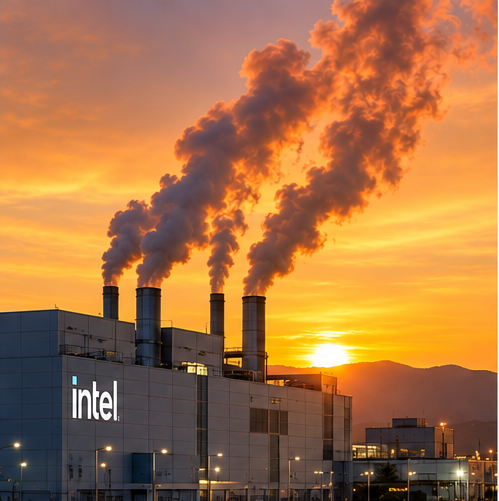
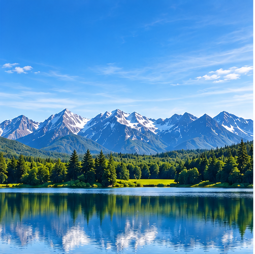
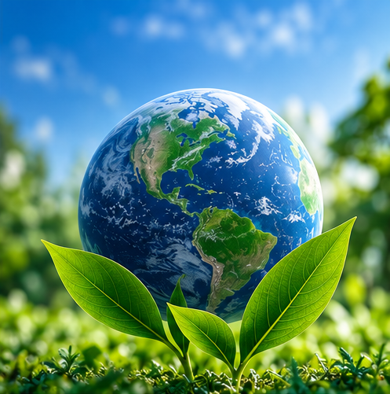
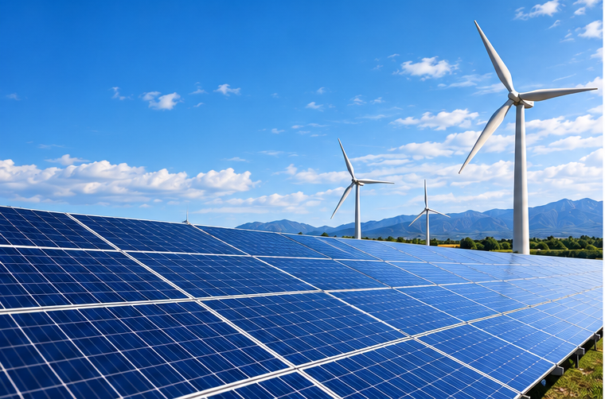

1968
Intel Founded
 Early Intel semiconductor technology from 1968
Early Intel semiconductor technology from 1968
Robert Noyce and Gordon Moore rename the newly formed company NM Electronics to Intel Corporation, laying the foundation for decades of technological innovation.
Explore Intel's journey through time, discovering how our commitment to innovation has shaped a more sustainable future for technology and our planet.
Detecting your language...
Early Intel semiconductor technology from 1968
Robert Noyce and Gordon Moore rename the newly formed company NM Electronics to Intel Corporation, laying the foundation for decades of technological innovation.
 Intel 4004 microprocessor from 1971
Intel 4004 microprocessor from 1971
Intel debuts the 4004, the world's first commercial microprocessor, igniting the microprocessor revolution and propelling the future of computing devices.
 Intel 8086 processor from 1978
Intel 8086 processor from 1978
Launch of the 8086 processor, establishing the x86 architecture that drives countless PCs and servers in the modern era.
 Intel 386 processor from 1985
Intel 386 processor from 1985
Intel introduces the 386 processor with 32-bit architecture, ushering in a new era of performance and multitasking for personal computers.

Graphic representing Intel's peak greenhouse gas emissions in 2006This year marks Intel's highest annual greenhouse gas emissions for operations. Over subsequent years, Intel invests heavily in chemical abatement, renewable energy, and energy-efficient manufacturing to reverse this trend.

Graphic representing Intel's RISE sustainability strategyIntel launches its RISE (Responsible, Inclusive, Sustainable, Enabling) strategy and 2030 goals, aiming to drive industry-wide progress on climate action, water stewardship, and waste reduction.

Graphic representing Intel's net-zero by 2040 commitmentIntel announces its commitment to achieve net-zero greenhouse gas emissions (Scope 1 and 2) across its global operations by 2040, building on years of environmental initiatives.

Graphic representing Intel's renewable electricity progressThe company achieves 99% renewable electricity usage worldwide, helping to drastically lower carbon emissions and driving progress toward Intel's long-term sustainability goals.
Intel hosts its first Sustainability Summit, uniting suppliers, government officials, and industry leaders to collaborate on next-generation sustainable semiconductor manufacturing.
Scroll to view timeline | Hover over cards to learn more!
Under its RISE (Responsible, Inclusive, Sustainable, Enabling) strategy, Intel sets ambitious 2030 goals, including driving industry-wide progress on climate action, water stewardship, and waste reduction.
In 2022, Intel pledged to achieve net-zero greenhouse gas emissions (Scope 1 and 2) by 2040. This commitment builds on decades of environmental initiatives and partnerships across the semiconductor industry.
Intel conserves billions of gallons of water annually and collaborates with local communities to restore watersheds. Intel also upcycles and recycles materials to reduce waste and advance a circular economy.